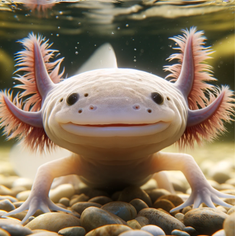
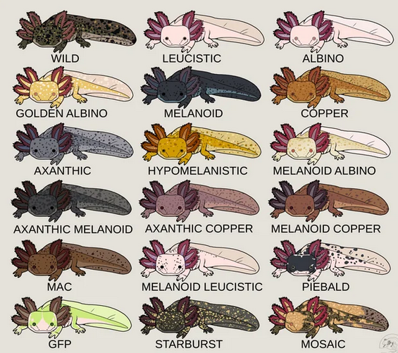
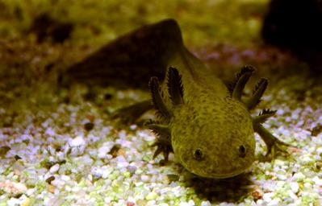

The axolotl, also known as the Mexican walking fish, is not a fish but a salamander that never undergoes metamorphosis, spending its entire life underwater. With its fringed gills, wide eyes, and an ability to regenerate lost body parts, the axolotl looks like a creature from a fantasy novel. This critically endangered species is native to the lake complex of Xochimilco near Mexico City.



All images CC0